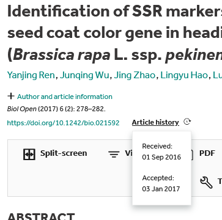
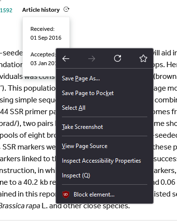
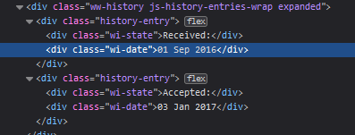
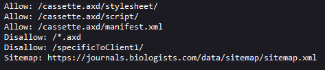
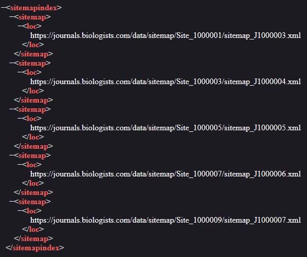
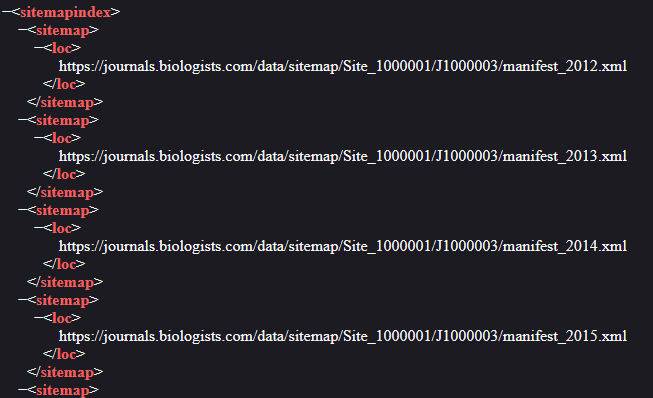
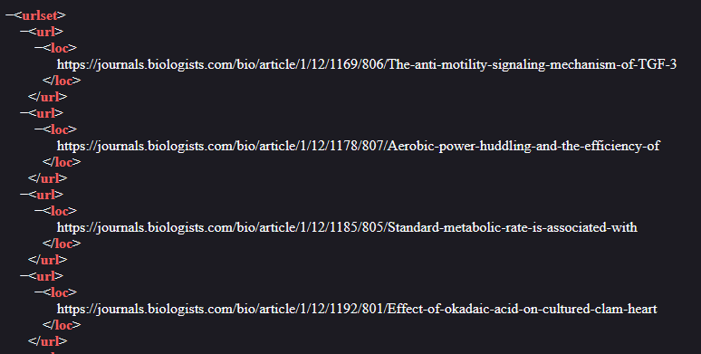

Show the code
library(tidyverse)
library(rvest)Pablo Gómez Barreiro ![]()
This is the third installment of a series of blog/tutorials exploring some of the text-mining/web-scraping methods used on the preprint (The Strain on Scientific Publishing). Head over to Text-mining PLOS articles using R to read the first instance, and here to catch up with the second one: Text-mining a Taylor & Francis journal using R.
This time is all about using web-scraping to obtain editorial information from scientific journals. Biology Open, an Open Access journal from The Company of Biologists, have kindly offered themselves for the test. To the task at hand!
Before jumping into “large scale” web-scraping, is best to optimize for one target and optimize from there. For this test I´v chosen the article Identification of SSR markers closely linked to the yellow seed coat color gene in heading Chinese cabbage (Brassica rapa L. ssp. pekinensis). To show the editorial data of this paper we need to click on the website button Article history.

Right clicking in the editorial data pop-up will show a menu with several options depending on your browser. If you are using Firefox, select the button Insepct (Q)

Once you click Inspect (Q) (or the equivalent on your browser) the screen will split in two and will show the html code linked to the editorial times.

Our target nodes are going to be wi-state and wi-date. For extra points we are going to target Keywords too, but I´ll let you figure out with nodes we need to target for that (click below to get the answer)
.content-metadata-keywords a
Once again we to load the R libraries we plan to use for this project:
library(tidyverse)
library(rvest)It is time now to download the article .html document and extract the nodes. To avoid reading/downloading again and again the same article it is best to store it as an object (article) once and work with it. This way you are “calling” only once to the host server, reducing your footprint and being less invasive.
article<-read_html("https://journals.biologists.com/bio/article/6/2/278/1846/Identification-of-SSR-markers-closely-linked-to")
editorial_state<-article%>%
html_nodes(".wi-state")%>%
html_text2()
editorial_date<-article%>%
html_nodes(".wi-date")%>%
html_text2()
keywords<-article%>%
html_nodes(".content-metadata-keywords a")%>%
html_text2()
editorial_state[1] "Received:" "Accepted:"editorial_date[1] "01 Sep 2016" "03 Jan 2017"keywords[1] "Brassica rapa" "Seed coat color" "SSR markers" "Genetic map" I personally like to store the data in a data frame, with a single column containing the editorial data. On a large scale project sometimes some unexpected data (e.g. revision dates) is shipped with these nodes, and having everything on a single string adds flexibility later to extract data into new columns using the functions mutate() and gsub().
editorial_times<-paste(editorial_state,editorial_date,collapse = " - ")
keywords <-paste(keywords,collapse = ", ")
## Storing data in a data frame
article_df<-data.frame(editorial_times,keywords)
head(article_df) editorial_times
1 Received: 01 Sep 2016 - Accepted: 03 Jan 2017
keywords
1 Brassica rapa, Seed coat color, SSR markers, Genetic mapA quick exercise of the use of mutate and gsub to clean a text string. The position of .* in the target pattern decides if the text to erase is before or after. More information on the use of gsub() and .* can be found here: Remove Characters Before or After Point in String in R (Example).
article_df_clean<-article_df%>%
#Delete everything before "Received:"
mutate(Received=gsub(".*Received:","",editorial_times),
#Delete everything after "-"
Received=gsub("-.*","",Received))%>%
#Delete everything before "Accepted:"
mutate(Accepted=gsub(".*Accepted:","",editorial_times))
article_df_clean editorial_times
1 Received: 01 Sep 2016 - Accepted: 03 Jan 2017
keywords Received
1 Brassica rapa, Seed coat color, SSR markers, Genetic map 01 Sep 2016
Accepted
1 03 Jan 2017Now that we have the target information from one article, is time to apply this to a larger pool of articles.
If only we could find a list of articles to work with…
Luckily websites often come with a sitemap for engines (e.g. Google) to be able to crawl this information and index it. Where to find this sitemap? Often, the sitemap address can be found on the robots.txt file, hosted in the website.
The Company of Biologists main website URL is https://journals.biologists.com. By adding /robots.txt to the URL (https://journals.biologists.com/robots.txt) we find a information on what is available and out of bounds for crawlers. Sometimes (this is not the case), this file includes information on best practices for text mining (e.g. polite web-scraping speed).

Let´s take a peek to the sitemap now:

The sitemap contains seven .xml links. Every publisher has their own ecosystem of sitemaps. Some are more complicated to understand than others. On this one is fair to assume they have a sitemap for each of the journals of The Company of Biologists, and we just need to keep digging further to find our target (Biology Open). Let´s now travel to the first link: https://journals.biologists.com/data/sitemap/Site_1000001/sitemap_J1000003.xml

And its another sitemap. At least this one seems to be organized by dates, but we still don´t know for which journal they are. Let´s go find what is inside the URL https://journals.biologists.com/data/sitemap/Site_1000001/J1000003/manifest_2012.xml

This time we finally strike gold. This seems to be a list of articles, from 2012, and from the URL (https://journals.biologists.com/bio/) I can see they all belong to Biology Open. In any case, is always worth travelling across different sitemaps to understand the architecture of the website and ensure we are not missing anything.
Now we know were to find a list of articles. Let´s say we want a list with all Biology Open articles (2012 to present. How do we get that? Notice in the sitemap, the URL address for each year, is wrapped on a loc node. This is what we are after to start with:
each_year_sitemap<-read_html("https://journals.biologists.com/data/sitemap/Site_1000001/sitemap_J1000003.xml")%>%
html_nodes("loc")%>%
html_text()
each_year_sitemap[1:5][1] "https://journals.biologists.com/data/sitemap/Site_1000001/J1000003/manifest_2012.xml"
[2] "https://journals.biologists.com/data/sitemap/Site_1000001/J1000003/manifest_2013.xml"
[3] "https://journals.biologists.com/data/sitemap/Site_1000001/J1000003/manifest_2014.xml"
[4] "https://journals.biologists.com/data/sitemap/Site_1000001/J1000003/manifest_2015.xml"
[5] "https://journals.biologists.com/data/sitemap/Site_1000001/J1000003/manifest_2016.xml"And we can now use each_year_sitemap in a loop to extract the articles for each of the years and store the links in URL_data_frame, which should have > 3,000 articles.
URL_data_frame<-data.frame()
for (i in each_year_sitemap) {
articles<-read_html(i)
URL<-articles%>%
html_nodes("loc")%>%
html_text2()
URL_data_frame<-bind_rows(URL_data_frame, as.data.frame(URL))
}
nrow(URL_data_frame)[1] 3031The loop is only slightly different to those built for the other two blogs. Keep in mind each loop is a request to a host server. A large volume or request in little time is likely to get you banned (for some time or undefinitely) from the host server. The key here is find a balance to avoid this. The speed at which each instance of the loop happens depends on host server response, computer speed and internet download speed. To avoid getting kicked out we are going to add an extra one second delay using the function Sys.sleep(1).
Because extracting the data from the articles is at least going to take 3,000 seconds (50 min.) I´m going to recreate the example with a sub-sample of 200 articles
article_info<- data.frame() #Empty data frame to store extracted data
URLs<- sample(URL_data_frame$URL,100) # Grab a sample of 100 articles and store them in vector form.
progress_bar<-txtProgressBar(min = 0, max = length(URLs), initial = 0,style = 3)
count<-0
for (i in URLs) {
article<-read_html(i)
editorial_state<-article%>%
html_nodes(".wi-state")%>%
html_text2()
if (identical(editorial_state,character(0))) {
editorial_state<-"Not available"
} else {
editorial_state<-editorial_state}
editorial_date<-article%>%
html_nodes(".wi-date")%>%
html_text2()
if (identical(editorial_date,character(0))) {
editorial_date<-"Not available"
} else {
editorial_date<-editorial_date}
editorial_times<-paste(editorial_state,editorial_date,collapse = " - ")
keywords<-article%>%
html_nodes(".content-metadata-keywords a")%>%
html_text2()
keywords <-paste(keywords,collapse = ", ")
temp_df<-data.frame(i,editorial_times,keywords)
article_info<-bind_rows(article_info,temp_df)
Sys.sleep(1) #Manual delay
count<-count+1
setTxtProgressBar(progress_bar,count) #progress bar
}
close(progress_bar) Check the object article_info. You might notice some articles don´t have the information we were looking for, but when you navigate into the website the information is there. This is because (in this particular case), the host server is “experiencing unusual traffic”. Instead of kicking us out of the server is redirecting to a different page. Let´s be patient, and increase the Sys.sleep() to 5 seconds and hope for better results.
article_info<- data.frame() #Empty data frame to store extracted data
URLs<- sample(URL_data_frame$URL,100) # Grab a sample of 100 articles and store them in vector form.
progress_bar<-txtProgressBar(min = 0, max = length(URLs), initial = 0,style = 3)
count<-0
for (i in URLs) {
article<-read_html(i)
editorial_state<-article%>%
html_nodes(".wi-state")%>%
html_text2()
if (identical(editorial_state,character(0))) {
editorial_state<-"Not available"
} else {
editorial_state<-editorial_state}
editorial_date<-article%>%
html_nodes(".wi-date")%>%
html_text2()
if (identical(editorial_date,character(0))) {
editorial_date<-"Not available"
} else {
editorial_date<-editorial_date}
editorial_times<-paste(editorial_state,editorial_date,collapse = " - ")
keywords<-article%>%
html_nodes(".content-metadata-keywords a")%>%
html_text2()
keywords <-paste(keywords,collapse = ", ")
temp_df<-data.frame(i,editorial_times,keywords)
article_info<-bind_rows(article_info,temp_df)
Sys.sleep(5) #Manual delay - 5 seconds
count<-count+1
setTxtProgressBar(progress_bar,count) #progress bar
}
close(progress_bar) Check the object article_info. Slightly better now? This is why is important to find the right balance finding the best time for each instance of the loop… which usually mean you are going to spend weeks/months when targeting LARGE volumes of articles.
head(article_info,10)There is no need to restart the loop if some data is missing. Is easier to filter the URLs without info and feed these to the loop again.
Gómez Barreiro, P. (2023). Text-mining a Taylor & Francis journal using R. https://pagomba-blog.netlify.app/posts/11_10_23/
Gómez Barreiro, P. (2023). Text-mining PLOS articles using R. https://pagomba-blog.netlify.app/posts/08_10_23/
Hanson, M. A., Gómez Barreiro, P., Crosetto, P., & Brockington, D. (2023). arXiv. The Strain on Scientific Publishing. https://arxiv.org/abs/2309.15884
Wickham H (2022). rvest: Easily Harvest (Scrape) Web Pages. R package version 1.0.3. <https://CRAN.R-project.org/package=rvest>
Wickham H, et al. (2019) “Welcome to the tidyverse.” Journal of Open Source Software, 4 (43), 1686. doi: https://doi.org/10.21105/joss.01686
Last update: 18 Nov 2023